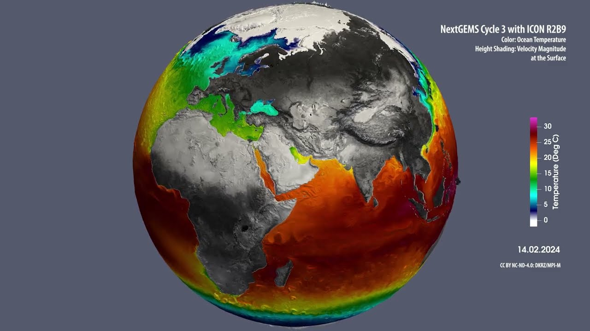

Example lecture: A “zero-dimensional” energy balance model of Earth’s climate#
Note
This lecture requires
Programming knowledge: Basic to intermediate Python programming skills
Mathematical background: Basic calculus (e.g. Taylor series), numerics (Euler time stepping) and differential equations (ODE)
import xarray as xr
import pandas as pd
import numpy as np
import matplotlib.pyplot as plt
The Observed Global Energy Budget#
Note
Reminder The global energy budget is the balance of energy coming into and going out of Earth. An imbalance in the global energy budget leads to a change in the heat content of the climate system.
Why does the Global Energy Budget matter?#
Climate Change Connection: Changes in Earth’s energy budget directly drive global warming and alter weather patterns. Higher greenhouse gas concentrations trap more energy, resulting in planetary warming.
Real-world Consequences:
Extreme Weather: More frequent and intense hurricanes, floods, droughts, and extreme precipitation.
Polar Ice Loss: The warming accelerates ice sheet melting, raising sea levels and disrupting critical ocean circulation systems
Biodiversity Risk: Warmer regions put numerous species’ habitats in danger.
Human Influence: Our activities—like burning fossil fuel and deforestation—significantly alter the energy budget by increasing atmospheric greenhouse gases and raising global temperatures. Understanding these energy dynamics helps us assess our environmental impact and develop sustainable alternatives.

Fig. 1 The global annual mean energy fluxes.#
In this lecture, we’ll build a basic climate model based on this energy budget. But first, we need a simpler version of this budget.
Important
Climate Model Basics
Our simple climate model can be written as:
Heat Content Change =
\(+\) Absorbed solar radiation
\(-\) Outgoing Longwave Radiation
\(+\) Human-caused greenhouse effect
These elements represent a global average, hence the term “zero-dimensional.”
{kind=link}
Fig. 2 Planetary Energy Balance#
Note
How to build the model? To make this simple conceptual model quantitative, we need a mathematical formulation for each of these three processes.
1.1 Absorbed solar radiation#
At Earth’s orbital distance from the Sun, the power of the Sun’s rays that intercept the Earth is equal to
S = 1368 # solar insolation [W/m^2] (energy per unit time per unit area)
A small fraction
alpha = 0.3 # albedo, or planetary reflectivity [unitless]
of this incoming solar radiation is reflected back out to space (by reflective surfaces like white clouds, snow, and ice), with the remaining fraction \((1-\alpha)\) being absorbed.
Since the incoming solar rays are all approximately parallel this far from the Sun, the cross-sectional area of the Earth that intercepts them is just a disc of area \(\pi R^{2}\). Since all of the other terms we will consider act on the entire surface area \(4\pi R^{2}\) of the spherical Earth, the absorbed solar radiation per unit surface area (averaged over the entire globe) is reduced by a factor of 4.
{kind=link}
Fig. 3 Earth Solar Radiation#
The absorbed solar radiation per unit area is thus
def absorbed_solar_radiation(S=1368, alpha=0.3):
return S*(1-alpha)/4
Heat Content Change =
\(+\) Absorbed solar radiation ✅
\(-\) Outgoing Longwave Radiation
\(+\) Human-caused greenhouse effect
1.2 Outgoing Longwave Radiation#
Assume that the Earth acts similarly to a blackbody radiator. If we consider the Earth’s effective global mean emission temperature as \(T_e\) then the relation is given by:
In the above equation:
\(OLR\) stands for Outgoing Longwave Radiation
\(\sigma\) represents the Stefan-Boltzmann constant and has a value of \(5.67\times 10^{-8} W m^{-2}K^{-4}\)
From observational data, the average global annual value for \(OLR\) is 238.5 W \(m^{-2}\).
Given this value, we can rearrange the equation to find \(T_e\):
OLR = 238.5 # W/m²
sigma = 5.67e-8 # W/m²/K⁴
# Calculate Te using the Stefan-Boltzmann law
Te = (OLR/sigma)**0.25
print(f"Earth's Emission temperature (Te): {Te-273.15:.2f} °C")
Earth's Emission temperature (Te): -18.48 °C
The outgoing longwave radiation, denoted as \(G(T)\), represents the combined effects of negative feedbacks that dampen warming, such as blackbody radiation, and positive feedbacks that amplify warming, such as clouds that trap heat.
Since these physics are too complex to address in full detail here, we linearize the model by approximating the relationship between temperature and radiation.
We begin with the assumption that the preindustrial climate existed in energy balance, meaning the equilibrium temperature equals the preindustrial temperature \(T_0\).
This allows us to simplify our approach by using just the first-order term of a Taylor series expansion:
around the pre-industrial equilibrium temperature \(T_0\).
T0 = 14. # preindustrial temperature averaged over the entire planet [°C]
By expanding:
To simplify the expression, we define:
which gives
def outgoing_longwave_radiation(A, B, T):
return A - B*T
Important
\(B\) comes from a bottom-up estimate based on the best understanding of the various climate feedbacks (read more here)
B = -1.3 # climate feedback parameter [W/m^2/°C],
Note
Since \(B<0\), this tells us that the overall climate feedback is negative (i.e., stabilizing).
Important
Assumption: The value of \(A\) is determined by the preindustrial equilibrium condition, which states that before human influence, Earth’s energy budget was balanced:
Where:
\(\frac{S(1-\alpha)}{4}\) represents the absorbed solar radiation
\(A - BT_0\) is the OLR during the preindustrial equilibrium
By rearanging this equation, we find that the value of \(A\) is given by
A = absorbed_solar_radiation() + B*T0
print(A) # W/m^2
221.2
Heat Content Change =
\(+\) Absorbed solar radiation ✅
\(-\) Outgoing Longwave Radiation ✅
\(+\) Human-caused greenhouse effect
1.3 Human-caused greenhouse effect#
The greenhouse effect from carbon dioxide has been empirically determined to follow a logarithmic relationship with atmospheric CO₂ concentrations:
Where:
\(a\) is a constant representing climate sensitivity to \(CO_2\) changes
\(CO_2\) is the current atmospheric carbon dioxide concentration
\(CO_{2,PI}\) is the preindustrial carbon dioxide concentration
a = 5 # CO2 forcing coefficient [W/m^2]
CO2_PI = 280 # preindustrial CO2 concentration [parts per million; ppm];
def greenhouse_effect(CO2, a=5, CO2_PI=280):
return a * np.log(CO2/CO2_PI)
co2_present = 420
co2_range = 280*2**np.linspace(-1,3,100)
plt.plot(co2_range, greenhouse_effect(co2_range), color = "black")
plt.ylabel('Radiative forcing [$W/m^2$]')
plt.xlabel('$CO_2$ concentration [ppm]')
plt.plot(CO2_PI, greenhouse_effect(CO2_PI), marker=".", markersize = 20, label = "pre-industrial (PI)", color = "blue")
plt.plot(co2_present, greenhouse_effect(co2_present), marker=".", markersize = 20, label = "present day (2020)", color = "red")
plt.xticks([280, 280*2, 280*4, 280*8])
plt.legend(loc = 4)
plt.grid()
Heat Content Change =
\(+\) Absorbed solar radiation ✅
\(-\) Outgoing Longwave Radiation ✅
\(+\) Human-caused greenhouse effect ✅
Observations from Mauna Loa Volcano#

Fig. 4 Mauna Loa Volcano#
1.4 Change in Heat Content#
The heat content of the climate system is determined by the temperature \(T\) (in Kelvin) and the system’s heat capacity. We can express this relationship as:
Where:
\(C_{temp}\) represents the total heat content of the climate system
\(c_p\) is the effective heat capacity of the climate system
The effective heat capacity of the climate system is primarily dominated by the upper ocean’s contribution, which is approximately 51 \(\frac{J}{m^2 K}\)
C = 51 # atmosphere and upper-ocean heat capacity [J/m^2/°K]
Important
Assumption: Constant heat capacity The rate of change in heat content over time is expressed as
Since the heat capacity of the Earth remains essentially constant, we can simplify this expression in terms of temperature change:
1.5 “Zero-Dimensional” Climate Model Equation#
Combining all the subcomponent models, we can express the governing equation of our “zero-dimensional” energy balance climate model as an Ordinary Differential Equation (ODE):
This equation determines the time evolution of Earth’s globally averaged surface temperature, where:
\(c_p\frac{dT}{dt}\) represents the rate of heat content change
\(\frac{S(1-\alpha)}{4}\) is the absorbed solar radiation
\((A - BT)\) is the outgoing longwave radiation
\(a \ln\left(\frac{CO_2}{CO_{2,PI}}\right)\) accounts for the human-caused greenhouse effect
2) Numerical solution method and data structures#
2.1) Discretization#
The energy balance model equation above can be discretized in time as
This finite difference equation approximates the exact ordinary differential equation through a first-order truncation of the Taylor series expansion. The approximation becomes more accurate as \(\Delta t\) \(\rightarrow 0\). In practice, we must select a sufficiently small model timestep \(\Delta t\) to ensure numerical stability and solution convergence while balancing runtime of the model.
Using the notation \(T_n \equiv T(t_n)\) to represent the temperature at timestep \(n\), and \(T_{n+1} \equiv T(t_{n+1})\) for the temperature at the next timestep \(t_{n+1} = t_n + \Delta t\), we can rearrange the equation to solve for \(T_{n+1}\):
2.2) Timestepping#
More generally, this equation follows the form of an explicit Euler method:
which we implement below.
Important
Exercise: Calculate the tendency of our Energy Balance Model
Current temperature \(T_n\) = 15°C
Timestep \(\Delta t\) = 1 year
Determine whether the temperature will increase, decrease, or remain stable in the next timestep. Explain what this result indicates about Earth’s energy balance at this temperature.
T_n = 15
deltat = 1
t = 0
tendency = 1/C * (
absorbed_solar_radiation()
- outgoing_longwave_radiation(A, B, T_n)
)
What tendency do you expect?
The tendency is negative because at \(T_n\) = 15°C, the outgoing longwave radiation exceeds the sum of absorbed solar radiation and greenhouse effect. This means the Earth is losing more energy than it’s gaining at this temperature.
For the next timestep, using the equation \(T_{n+1} = T_n + \Delta t \cdot\) tendency
T_n1 = T_n + deltat*tendency
T_n1
14.974509803921569
Now think about how to calculate the temperature change for the next 150 years? What temperature do you expect after 150 years?
# Initialize an array to store temperature values for 150 years
T_n = np.zeros(150)
# Set the initial temperature to 15°C
T_n[0] = 15
# Loop through each year (1 through 149)
for year in range(1, 150):
# Calculate the temperature tendency (rate of change) for the current year
# tendency = (1/heat_capacity) * (energy_in - energy_out)
tendency = 1. / C * (
+ absorbed_solar_radiation(alpha = alpha, S=S)
- outgoing_longwave_radiation(T=T_n[year-1], A = A, B=B)
+ greenhouse_effect(280, a = a, CO2_PI=CO2_PI)
)
# Calculate the new temperature using the explicit Euler method:
# T(next) = T(current) + (timestep * tendency)
T_n[year] = T_n[year-1] + deltat*tendency
plt.plot(T_n)
plt.ylabel("Temperature [°C]")
plt.xlabel("Time [years]")
Text(0.5, 0, 'Time [years]')
Now we can finally build our Energy Balance Model (EBM).
class EBM:
"""
Zero Order Energy Balance Model (EBM)
The Energy Balance Model (EBM) represents the balance between incoming solar radiation and outgoing longwave radiation.
It also considers the greenhouse effect caused by CO2 levels. This model can simulate the temporal evolution of temperature
based on various parameters like albedo, solar constant, and greenhouse effect coefficients.
Attributes:
- T : Temperature (in Kelvin)
- t : Time
- deltat : Time step
- CO2 : Carbon Dioxide function that returns CO2 levels in dependency of time t
- C : Heat capacity
- a : Greenhouse effect coefficient
- A : Outgoing longwave radiation constant
- B : Temperature sensitivity of outgoing radiation
- CO2_PI : Pre-industrial CO2 concentration
- alpha : Albedo
- S : Solar constant
"""
def __init__(self, T, t, deltat, CO2, C, a, A, B, CO2_PI, alpha, S):
self.T = np.array(T)
self.t = t
self.deltat = deltat
self.C = C
self.a = a
self.A = A
self.B = B
self.co2_pi = CO2_PI
self.alpha = alpha
self.S = S
self.co2 = CO2
def absorbed_solar_radiation(self, S, alpha):
return (S*(1-alpha)/4)
def outgoing_longwave_radiation(self, T, A, B):
return A - B*T
def greenhouse_effect(self, CO2, a=5, CO2_PI = 280):
return a*np.log(CO2/CO2_PI)
def tendency(self):
current_T = self.T[-1] if self.T.size > 1 else self.T
current_t = self.t[-1] if self.T.size > 1 else self.t
return 1. / self.C * (
+ self.absorbed_solar_radiation(S=self.S, alpha=self.alpha)
- self.outgoing_longwave_radiation(current_T, A=self.A, B=self.B)
+ self.greenhouse_effect(self.co2(current_t), a=self.a, CO2_PI=self.co2_pi)
)
@property
def timestep(self):
new_T = self.T[-1] + self.deltat * self.tendency() if self.T.size > 1 else self.T + self.deltat * self.tendency()
new_t = self.t[-1] + self.deltat if self.T.size > 1 else self.t + self.deltat
self.T = np.append(self.T, new_T)
self.t = np.append(self.t, new_t)
2.4) Running simulations of the energy balance model#
Let’s define a function that runs an EBM simulation by timestepping forward until a given end_year.
def run_model(model, end_year):
for year in range(end_year):
model.timestep
For example, let us consider the case where CO₂ emissions increase by 1% year-over-year from the preindustrial value [CO\(_2\)] = \(280.0\) ppm, starting at T=T₀=14°C in year t=0 and with a timestep Δt = 1 year.
def CO2_test(t, CO2_PI=280):
return CO2_PI ** (1 + 1/100)**t
model_parameters = {
"T":T0,
"t":0,
"deltat":1,
"CO2":CO2_test,
"C":C,
"a":a,
"A":A,
"B":B,
"CO2_PI":280,
"alpha":alpha,
"S":S
}
Note
In Python, the ** syntax in a function call is used for unpacking key-value pairs from dictionaries directly into function arguments. This is particularly useful when working with functions that accept a variable number of keyword arguments.
In summary, ** in a function call is used to unpack dictionary items as keyword arguments.
3) Energy balance model applications#
3.1) Why was Earth’s preindustrial climate so stable?#
Let us consider the simple case where CO₂ concentrations remain at their pre-industrial temperatures.
def CO2_test(t):
return 280
model_parameters["CO2"] = CO2_test
model = EBM(**model_parameters)
run_model(model, 200)
t0s = np.arange(0,28,2)
for i in t0s:
model_parameters["T"] = i
model = EBM(**model_parameters)
run_model(model, 200)
plt.plot(model.T)
plt.grid()
plt.xlabel("year")
plt.ylabel("temperature [°C]")
Text(0, 0.5, 'temperature [°C]')
This figure shows that, no matter where we start out, the overall negative feedbacks (\(B<0\)) restore the temperature to the preindustrial equilibrum value of \(T_0\) = 14.0 °C, over an exponential timescale of about 100 years.
3.2) Historical global warming fueled by greenhouse gas emissions#
Human greenhouse gas emissions have fundamentally altered Earth’s energy balance, moving us away from the stable preindustrial climate of the past few thousand years.
Since human CO₂ emissions are the main driver of global warming, we expect that if we plug historical CO₂ increases into our model (“forcing” it), we should roughly reproduce the observed historical global warming.
The observed increase of CO2 concentrations can be fairly accurately modelled by the simple cubic formula below.
def co2_hist(t):
return 280 * (1+ ((t-1850)/220)**3)
model_parameters["CO2"] = co2_hist
model_parameters["T"] = T0
model_parameters["t"] = 1850
model = EBM(**model_parameters)
run_model(model, 170)
temp_url = "https://raw.githubusercontent.com/florianboergel/climateoftheocean/main/data/graph.txt"
try:
temp = pd.read_csv(temp_url, header=None,
skiprows=5, index_col=0,
delim_whitespace=True,
on_bad_lines='skip', # Skip problematic lines
engine="python")
temp = temp + 14.15
except Exception as e:
print(f"Error loading temperature data: {e}")
CO2_url = "https://raw.githubusercontent.com/florianboergel/climateoftheocean/main/data/monthly_in_situ_co2_mlo.csv"
try:
co2_data = pd.read_csv(CO2_url, header = 58,skiprows=8, index_col=0)
except Exception as e:
print(f"Error loading CO2 data: {e}")
co2_data = co2_data.iloc[4:]
co2_data = pd.to_numeric(co2_data.iloc[:,5])
co2_data[co2_data<= 0] = np.nan
co2_data.index = pd.to_datetime(co2_data.index, format='%Y')
co2_data = co2_data.groupby(co2_data.index.year).mean()
f, (ax, bx) = plt.subplots(1,2, figsize=(8,4))
ax.plot(np.arange(1850, 2020), co2_hist(np.arange(1850, 2020)), label = "EBM model")
ax.plot(co2_data.index, co2_data.values, label="Keeling Curve")
ax.set_ylabel("$CO_2$ concentration [ppm]")
ax.grid()
ax.set_xlabel("Year")
ax.legend()
bx.plot(np.arange(1850, 2021), model.T, label="EBM model")
temp.plot(ax = bx)
bx.set_ylabel("Temperature [°C]")
bx.grid()
bx.legend(["EBM Model", "NASA Observations", "NASA Obs roll. mean"])
bx.set_xlabel("Year")
f.tight_layout()
Warning
CO2 Emissions: Beyond Trend Predictions to Climate Noise
While CO2 emissions can be used to predict the overarching trend in climate, we must also consider the inherent climate noise present in observations. This noise doesn’t arise from instrumental inaccuracies but represents genuine signals from the Earth’s natural variability.
Such natural fluctuations are mainly attributed to the turbulent and chaotic fluid dynamics of both the atmosphere and the ocean. We will delve deeper into this topic in Lecture 4. The dynamics are visually represented in the following illustrations:
{:target=”_blank”}”
Now that we’ve convinced ourselves that the model accurately reproduces historical warming, we can use it to project how much warming we might expect due to future CO₂ emissions.
Important
What You Learned Today
Energy Balance Fundamentals: Built a zero-dimensional climate model based on absorbed solar radiation, outgoing longwave radiation, and greenhouse effects
Numerical Climate Modeling: Implemented and solved differential equations using Python, creating a reusable EBM that reproduces historical temperature trends
Additional content: Best- and worst-case projections of future global warming
Consider two divergent hypothetical futures:
a low-emissions world in which emissions decrease such that CO2 concentrations stay below 500 ppm by 2100 (known in climate circles as “RCP2.6”) and
a high-emissions world in which emissions continue increasing and CO2 concentrations soar upwards of 1200 ppm (“RCP8.5”).
def CO2_RCP26(t):
return 280 * (1+ ((t-1850)/220)**3 * np.minimum(1., np.exp(-((t-1850)-170)/100)))
def CO2_RCP85(t):
return 280 * (1+ ((t-1850)/220)**3 * np.maximum(1., np.exp(((t-1850)-170)/100)))
In the low-emissions scenario, the temperature increase stays below \(\Delta T\) = 2 °C by 2100, while in the high-emissions scenario temperatures soar upwards of 3.5ºC above pre-industrial levels.
model_parameters["CO2"] = CO2_RCP26
model1 = EBM(**model_parameters)
model_parameters["CO2"] = CO2_RCP85
model2 = EBM(**model_parameters)
run_model(model1, 249)
run_model(model2, 249)
f, (ax, bx) = plt.subplots(1,2, figsize = (8,4))
ax.plot(np.arange(1850, 2100), CO2_RCP26(np.arange(1850,2100)),
color = "Blue", label = "RCP 2.6 low emissions")
ax.plot(np.arange(1850, 2100), CO2_RCP85(np.arange(1850,2100)),
color = "Red", label = "RCP 8.5 High emissions")
ax.plot(2023, CO2_RCP26(2025), marker=".",
markersize = 20, label = "we are here", color = "black")
ax.set_ylabel("$CO_2$ concentration [ppm]")
ax.legend()
bx.plot(np.arange(1850, 2100), model1.T, color = "Blue")
bx.plot(np.arange(1850, 2100), model2.T, color = "Red")
bx.axhline(y = 16, label = "Paris Agreement\n threshold (2°C warming)",
ls="--", color = "black")
bx.set_ylabel("Temperature [°C]")
bx.plot(2050, model2.T[200], marker=".",
markersize = 20, label = "we are here", color = "black")
bx.legend()
f.tight_layout()